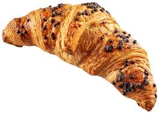

A croissant is a flaky, buttery pastry in a crescent shape, typically enjoyed for breakfast or as a snack. It's made from a laminated yeast dough, similar to puff pastry, and can be plain or filled with various ingredients. Croissants are often enjoyed with coffee or tea.
